Lecciones de circuitos eléctricos - Volumen V
Capítulo 4
REFERENCIA DE ÁLGEBRA
- Basic identities
- Arithmetic properties
- Properties of exponents
- Radicals
- Important constants
- Logarithms
- Factoring equivalencies
- The quadratic formula
- Sequences
- Factorials
- Solving simultaneous equations
- Contributors
Basic identities
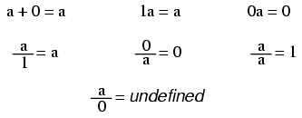
Nota: aunque popularmente se piensa que la división por cero es igual a infinito, esto no es técnicamente cierto. En algunas aplicaciones prácticas puede resultar útil pensar que el resultado de dicha fracciónque se acercainfinito positivo como denominador positivoaprochescero (imagínese calcular la corriente I = E/R en un circuito con una resistencia acercándose a cero; la corriente se acercaría al infinito), pero la fracción real de cualquier cosa dividida por cero no está definida en el alcance de los números reales o complejos.
Arithmetic properties
The associative property
Además y en la multiplicación, los términos pueden ser arbitrariamenteasociadoentre sí mediante el uso de paréntesis:
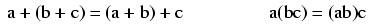
The commutative property
Además y en la multiplicación, los términos pueden intercambiarse arbitrariamente, oconmutado:
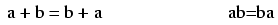
The distributive property
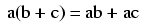
Properties of exponents
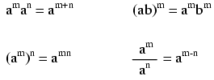
Radicals
Definition of a radical
Cuando la gente habla de "raíz cuadrada", se refiere a un radical con raíz de 2. Esto es matemáticamente equivalente a un número elevado a la potencia de 1/2. Es útil saber esta equivalencia cuando se utiliza una calculadora para determinar una raíz extraña. Supongamos, por ejemplo, que necesita encontrar la raíz cuarta de un número, pero su calculadora carece de un botón o función de "raíz cuarta". si tiene una yxfunción (que cualquier calculadora científica debería tener), puedes encontrar la raíz cuarta elevando ese número a la potencia 1/4, o x0.25.
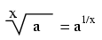
Es importante recordar que al resolver para uninclusoraíz (raíz cuadrada, raíz cuarta, etc.) de cualquier número, existentworespuestas válidas. Por ejemplo, la mayoría de la gente sabe que la raíz cuadrada de nueve es tres, peronegativotres también es una respuesta válida, ya que (-3)2= 9 igual que 32= 9.
Properties of radicals
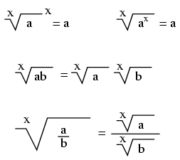
Important constants
Euler's number
La constante de Euler es un valor importante para funciones exponenciales, especialmente aplicaciones científicas que involucran desintegración (como la desintegración de una sustancia radiactiva). Es especialmente importante en cálculo debido a sus propiedades singularmente autosemejantes de integración y diferenciación.
e approximately equals: 2.71828 18284 59045 23536 02874 71352 66249 77572 47093 69996
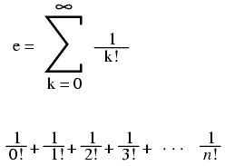
Pi
Pi (π) se define como la relación entre la circunferencia de un círculo y su diámetro.
Pi approximately equals: 3.14159 26535 89793 23846 26433 83279 50288 41971 69399 37511
Nota:Para ambas constantes de Euler (e) y pi (π), los espacios que se muestran entre cada conjunto de cinco dígitos no tienen significado matemático. Se colocan allí solo para que a sus ojos les resulte más fácil "dividir" el número en grupos de cinco dígitos al copiar manualmente.
Logarithms
Definition of a logarithm
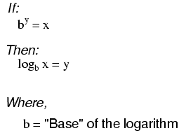
"log" denota un logaritmo común (base = 10), mientras que "ln" denota un logaritmo natural (base = e).
Properties of logarithms
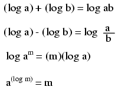
Estas propiedades de los logaritmos resultan útiles para realizar operaciones complejas de multiplicación y división. Son un ejemplo de algo llamadofunción de transformación, mediante el cual un tipo de operación matemática se transforma en otro tipo de operación matemática que es más sencilla de resolver. Usando una tabla de cifras de logaritmos, se pueden multiplicar o dividir números sumando o restando sus logaritmos, respectivamente. luego buscar esa cifra del logaritmo en la tabla y ver cuál es el producto o cociente final.
Las reglas de cálculo funcionan según este principio de los logaritmos al realizar la multiplicación y división mediante la suma y resta de distancias en la diapositiva.
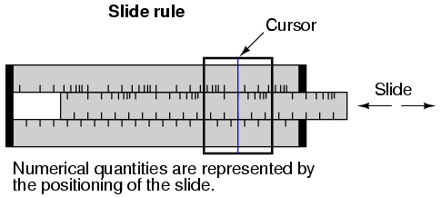
Las marcas en las escalas de una regla de cálculo están espaciadas de forma logarítmica, de modo que una posición lineal de la escala o del cursor da como resultado una indicación no lineal tal como se lee en las escalas. Sumar o restar longitudes en estas escalas logarítmicas da como resultado una indicación equivalente al producto o cociente, respectivamente, de esas longitudes.
La mayoría de las reglas de cálculo también estaban equipadas con escalas especiales para funciones trigonométricas, potencias, raíces y otras funciones aritméticas útiles.
Factoring equivalencies
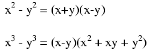
The quadratic formula
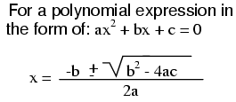
Sequences
Arithmetic sequences
An secuencia aritméticaes una serie de números obtenidos sumando (o restando) el mismo valor en cada paso. La secuencia de conteo de un niño (1, 2, 3, 4,...) es una secuencia aritmética simple, dondediferencia comúnes 1: es decir, cada número adyacente en la secuencia difiere en un valor de uno. Una secuencia aritmética que cuente sólo números pares (2, 4, 6, 8,...) o sólo números impares (1, 3, 5, 7, 9,...) tendría una diferencia común de 2.
En la notación estándar de secuencias, una letra minúscula "a" representa un elemento (un solo número) en la secuencia. El término "unn" se refiere al elemento en el nthpaso en la secuencia. Por ejemplo, "un3" en una secuencia aritmética de conteo par (diferencia común = 2) que comienza en 2 sería el número 6, "a" representando 4 y "a1" que representa el punto inicial de la secuencia (indicado en este ejemplo como 2).
La letra "A" mayúscula representa lasumde una secuencia aritmética. Por ejemplo, en la misma secuencia de conteo par que comienza en 2, A4es igual a la suma de todos los elementos de un1a través de un4, que por supuesto sería 2 + 4 + 6 + 8, o 20.
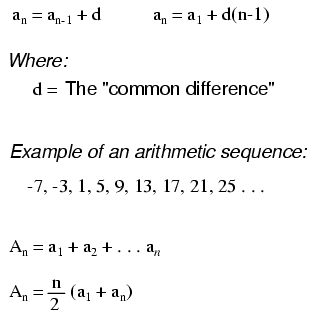
Geometric sequences
A secuencia geométrica, por otro lado, es una serie de números que se obtienen multiplicando (o dividiendo) por el mismo valor en cada paso. Una secuencia binaria de peso posicional (1, 2, 4, 8, 16, 32, 64,...) es una secuencia geométrica simple, donde laproporción comúnes 2: es decir, cada número adyacente en la secuencia difiere en unfactorde dos.
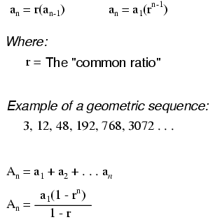
Factorials
Definition of a factorial
Indicado por el símbolo "!" después de un número entero; el producto de ese número entero y todos los números enteros en descenso a 1.
Ejemplo de factorial:
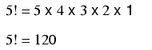
Strange factorials
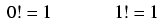
Solving simultaneous equations
los términosecuaciones simultáneas and sistemas de ecuacionesse refieren a condiciones en las que dos o más variables desconocidas están relacionadas entre sí a través de un número igual de ecuaciones. Considere el siguiente ejemplo:
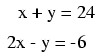
Para este conjunto de ecuaciones, sólo hay una única combinación de valores parax and yeso satisfará a ambos. Cualquiera de las dos ecuaciones, consideradas por separado, tiene una infinidad de valores válidos.(x,y)soluciones, perojuntossolo hay uno. Trazada en un gráfico, esta condición se vuelve obvia:
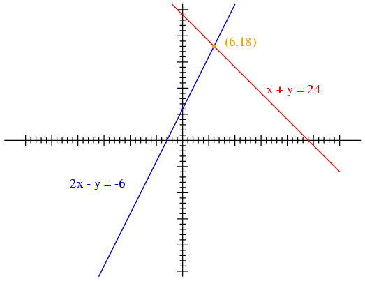
Cada línea es en realidad un continuo de puntos que representan posiblesx and ypares de soluciones para cada ecuación. Cada ecuación, por separado, tiene un número infinito de pares ordenados (x,y) soluciones. Sólo hay un punto donde las dos funciones linealesx + y = 24 and 2x - y = -6se cruzan (donde una de sus muchas soluciones independientes funciona para ambas ecuaciones), y ahí es dondexes igual a un valor de 6 yyes igual a un valor de 18.
Sin embargo, por lo general, representar gráficamente no es una forma muy eficiente de determinar el conjunto de soluciones simultáneas para dos o más ecuaciones. Es especialmente impráctico para sistemas de tres o más variables. En un sistema de tres variables, por ejemplo, la solución se encontraría mediante la intersección de tres planos en un espacio de coordenadas tridimensional, lo que no es un escenario fácil de visualizar.
Substitution method
Existen varias técnicas algebraicas para resolver ecuaciones simultáneas. Quizás lo más fácil de comprender sea elsustituciónmétodo. Tomemos, por ejemplo, nuestro problema de ejemplo de dos variables:
En el método de sustitución, manipulamos una de las ecuaciones de manera que una variable se define en términos de la otra:
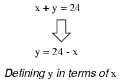
Entonces, tomamos este nuevodefiniciónde una variable ysustitutopara la misma variable en la otra ecuación. En este caso tomamos la definición dey, que es24 - xy sustituir esto por elytérmino encontrado en la otra ecuación:
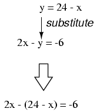
Ahora que tenemos una ecuación con una sola variable (x), podemos resolverlo usando técnicas algebraicas "normales":
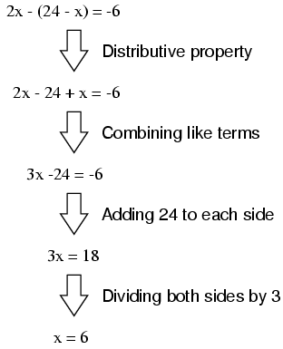
Ahora quexse conoce, podemos sustituir este valor en cualquiera de las ecuaciones originales y obtener un valor para y. O, para ahorrarnos algo de trabajo, podemos introducir este valor (6) en la ecuación que acabamos de generar para definiryen términos dex, siendo que ya está en una forma para resolvery:
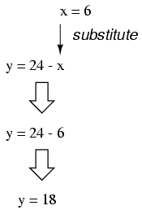
La aplicación del método de sustitución a sistemas de tres o más variables implica un patrón similar, sólo que requiere más trabajo. Esto generalmente es cierto para cualquier método de solución: el número de pasos necesarios para obtener soluciones aumenta rápidamente con cada variable adicional en el sistema.
Para resolver tres variables desconocidas, necesitamos al menos tres ecuaciones. Considere este ejemplo:
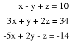
Siendo que la primera ecuación tiene los coeficientes más simples (1, -1 y 1, parax, y, yz, respectivamente), parece lógico utilizarlo para desarrollar una definición de una variable en términos de las otras dos. En este ejemplo, resolveréxen términos dey and z:
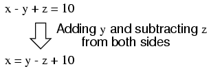
Ahora podemos sustituir esta definición dexdóndexaparece en las otras dos ecuaciones:
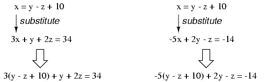
Reduciendo estas dos ecuaciones a sus formas más simples:
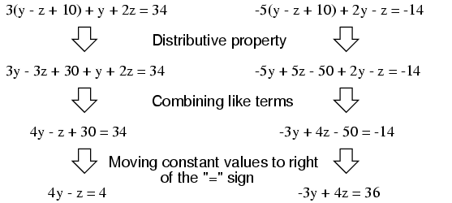
Hasta ahora, nuestros esfuerzos han reducido el sistema de tres variables en tres ecuaciones a dos variables en dos ecuaciones. Ahora podemos aplicar nuevamente la técnica de sustitución a las dos ecuaciones.4y - z = 4 and -3y + 4z = 36para resolver cualquiera de los dosy or z. Primero, manipularé la primera ecuación para definirzen términos dey:
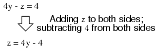
A continuación, sustituiremos esta definición dezen términos deydonde vemoszen la otra ecuación:
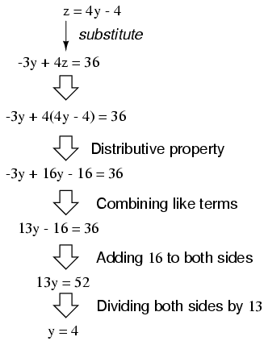
Ahora queyes un valor conocido, podemos introducirlo en la ecuación que definezen términos deyy obtener una cifra paraz:
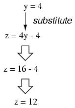
Ahora, con valores paray and zconocido, podemos introducirlos en la ecuación donde definimosxen términos dey and z, para obtener un valor dex:
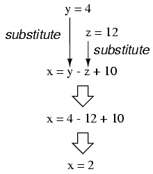
Para terminar, hemos encontrado valores parax, y, yzde 2, 4 y 12, respectivamente, que satisfacen las tres ecuaciones.
Addition method
Si bien el método de sustitución puede ser el más fácil de comprender a nivel conceptual, existen otros métodos de solución a nuestra disposición. Uno de esos métodos es el llamadosumamétodo, mediante el cual las ecuaciones se suman entre sí con el fin de cancelar términos variables.
Tomemos nuestro sistema de dos variables utilizado para demostrar el método de sustitución:
Una de las reglas de álgebra más utilizadas es que puedes realizar cualquier operación aritmética que desees con una ecuación siempre que la hagas.igualmente a ambos lados. Con referencia a la suma, esto significa que podemos sumar cualquier cantidad que queramos a ambos lados de una ecuación, siempre que sea lamismocantidad, sin alterar la verdad de la ecuación.
Entonces, una opción que tenemos es sumar los lados correspondientes de las ecuaciones para formar una nueva ecuación. Dado que cada ecuación es una expresión de igualdad (la misma cantidad en cada lado de la ecuación)=signo), sumar el lado izquierdo de una ecuación al lado izquierdo de la otra ecuación es válido siempre que sumemos también los lados derechos de las dos ecuaciones. En nuestro conjunto de ecuaciones de ejemplo, por ejemplo, podemos sumarx + y to 2x - yy agregar24 and -6juntos también para formar una nueva ecuación. ¿Qué beneficio tiene esto para nosotros? Examina lo que sucede cuando hacemos esto con nuestro conjunto de ecuaciones de ejemplo:
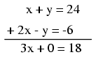
Debido a que la ecuación superior contenía un valor positivoytérmino mientras que la ecuación inferior contenía un valor negativoytérmino, estos dos términos se cancelaron entre sí en el proceso de suma, sin dejarytérmino en la suma. Lo que nos queda es una nueva ecuación, pero con una sola variable desconocida,x! Esto nos permite resolver fácilmente el valor dex:
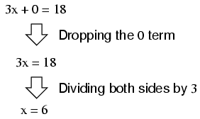
Una vez que tengamos un valor conocido parax, por supuesto, determinandoyEl valor de es una simple cuestión de sustitución (reemplazarxcon el numero6) en una de las ecuaciones originales. En este ejemplo, la técnica de sumar las ecuaciones funcionó bien para producir una ecuación con una única variable desconocida. ¿Qué tal un ejemplo donde las cosas no son tan simples? Considere el siguiente conjunto de ecuaciones:
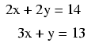
Podríamos sumar estas dos ecuaciones (siendo ésta una operación algebraica completamente válida), pero no nos beneficiaría en el objetivo de obtener valores parax and y:
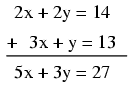
La ecuación resultante todavía contiene dos variables desconocidas, al igual que las ecuaciones originales, por lo que no hemos avanzado más en la obtención de una solución. Sin embargo, ¿qué pasaría si pudiéramos manipular una de las ecuaciones para tener un término negativo quequeríacancelar el término respectivo en la otra ecuación cuando se suma? Entonces, el sistema se reduciría a una sola ecuación con una única variable desconocida, tal como en el último ejemplo (fortuito).
Si tan solo pudiéramos girar elytérmino en la ecuación inferior en un- 2 añostérmino, de modo que cuando se sumaron las dos ecuaciones, ambasyLos términos de las ecuaciones se cancelarían, dejándonos sólo con unaxplazo, esto nos acercaría a una solución. Afortunadamente, esto no es difícil de hacer. si nosotrosmultiplicartodos y cada uno de los términos de la ecuación inferior por un-2, producirá el resultado que buscamos:
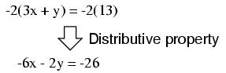
Ahora, podemos agregar esta nueva ecuación a la ecuación superior original:
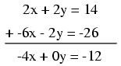
Resolviendo parax, obtenemos un valor de3:
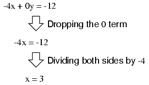
Sustituyendo este nuevo valor porxen una de las ecuaciones originales, el valor deyse determina fácilmente:
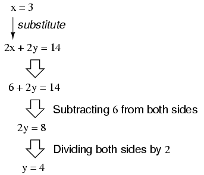
Usar esta técnica de solución en un sistema de tres variables es un poco más complejo. Al igual que con la sustitución, debes usar esta técnica para reducir el sistema de tres ecuaciones de tres variables a dos ecuaciones con dos variables y luego aplicarla nuevamente para obtener una sola ecuación con una variable desconocida. Para demostrarlo, usaré el sistema de ecuaciones de tres variables de la sección de sustitución:
Siendo que la ecuación superior tiene valores de coeficientes de1para cada variable, será una ecuación fácil de manipular y utilizar como herramienta de cancelación. Por ejemplo, si deseamos cancelar el3xtérmino de la ecuación del medio, todo lo que tenemos que hacer es tomar la ecuación superior, multiplicar cada uno de sus términos por-3, luego agréguelo a la ecuación del medio de esta manera:
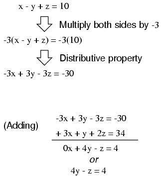
Podemos eliminar la ecuación inferior de su-5xtérmino de la misma manera: tome la ecuación superior original, multiplique cada uno de sus términos por5, luego agregue esa ecuación modificada a la ecuación inferior, dejando una nueva ecuación con soloy and ztérminos:
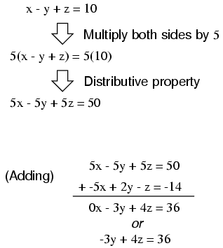
En este punto, tenemos dos ecuaciones con las mismas dos variables desconocidas,y and z:
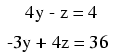
Mediante inspección, debe ser evidente que el-zEl término de la ecuación superior podría aprovecharse para cancelar la4ztérmino en la ecuación inferior si sólo multiplicamos cada término de la ecuación superior por4y sumamos las dos ecuaciones:
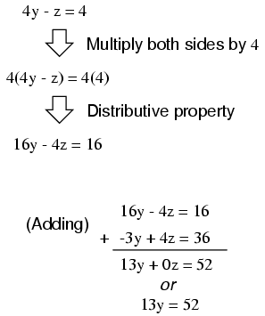
Tomando la nueva ecuación13y = 52y resolviendoy(dividiendo ambos lados por13), obtenemos un valor de4 for y. Sustituyendo este valor de4 for yen cualquiera de las ecuaciones de dos variables nos permite resolver paraz. Sustituyendo ambos valores dey and zen cualquiera de las ecuaciones originales de tres variables nos permite resolverx. El resultado final (¡te ahorraré los pasos algebraicos, ya que ya deberías estar familiarizado con ellos!) es quex = 2, y = 4, yz = 12.
Contributors
Los contribuyentes a este capítulo se enumeran en orden cronológico de sus contribuciones, desde el más reciente hasta el primero. Consulte el Apéndice 2 (Lista de colaboradores) para fechas e información de contacto.
Chirvasuta Constantin(2 de abril de 2003): Error señalado en la fórmula de la ecuación cuadrática.
Lecciones en circuitos eléctricoscopyright (C) 2000-2023 Tony R. Kuphaldt, según los términos y condiciones delCC BY License.